/* alvin-langdon-coburn - proofs */
12 plates. Deterministic overlays rendered by the composition-analysis skill.
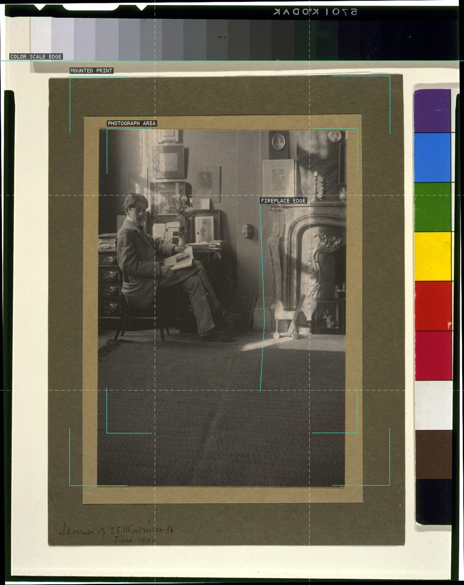
01-corner-of-25-mortimer-street
The digital reproduction makes the mounted print a frame around an interior study of chair, pictures, and fireplace.
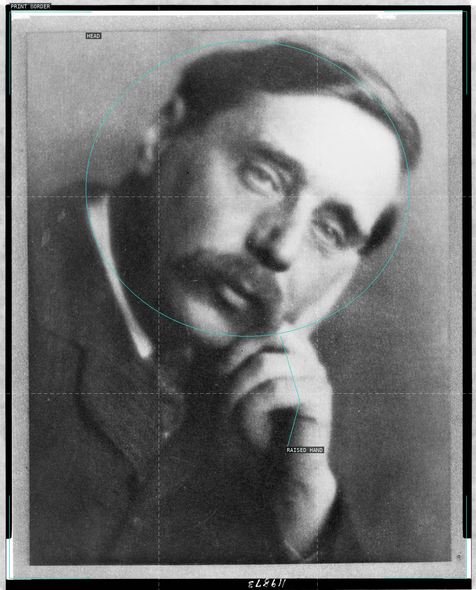
02-h-g-wells
A tilted head and raised hand make a compact diagonal inside the dark portrait field.
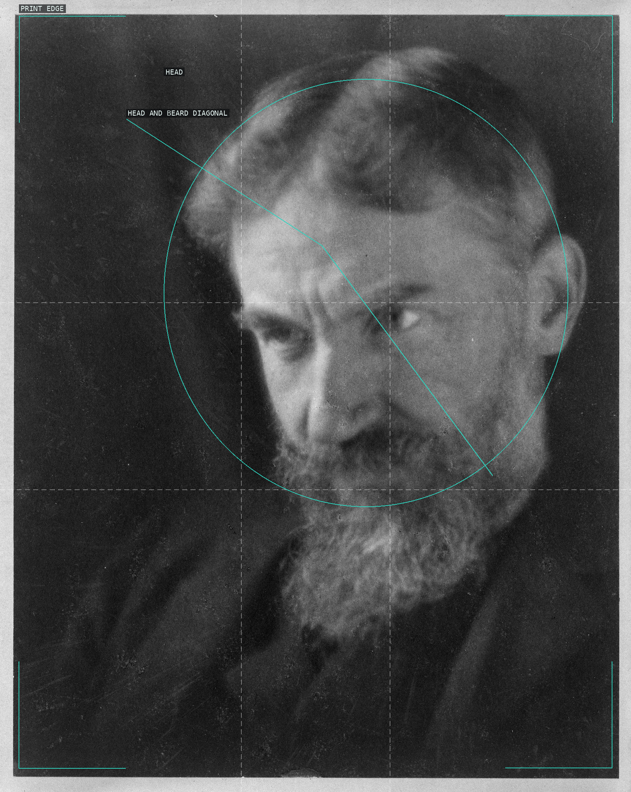
03-portrait-of-george-bernard-shaw
The tilted head carries the portrait diagonally out of a deep, nearly empty field.
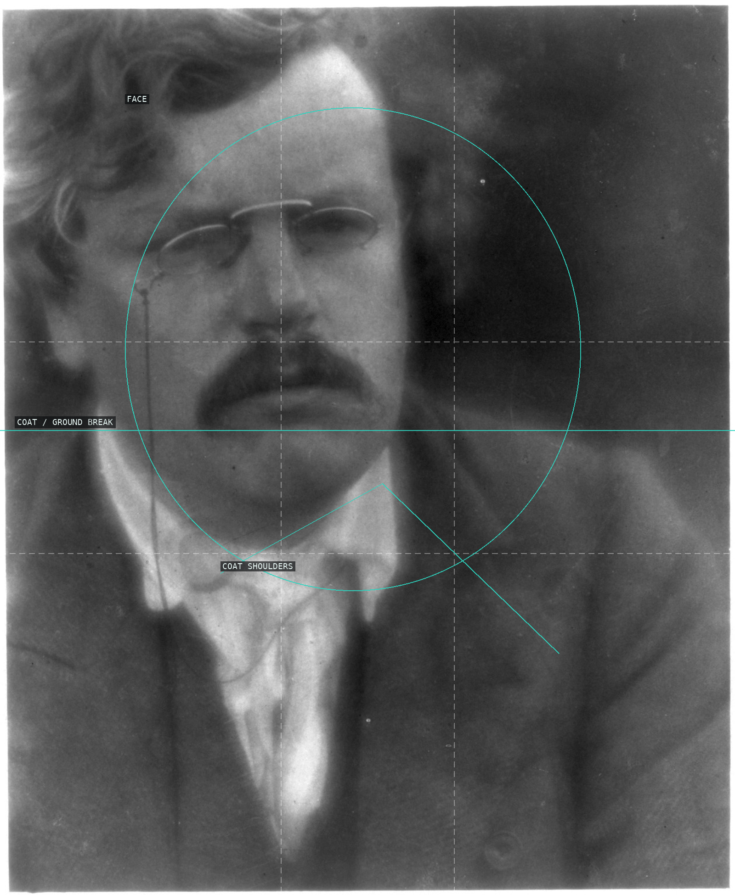
04-portrait-of-g-k-chesterton
A pale face emerges from the dark coat and surrounding ground.
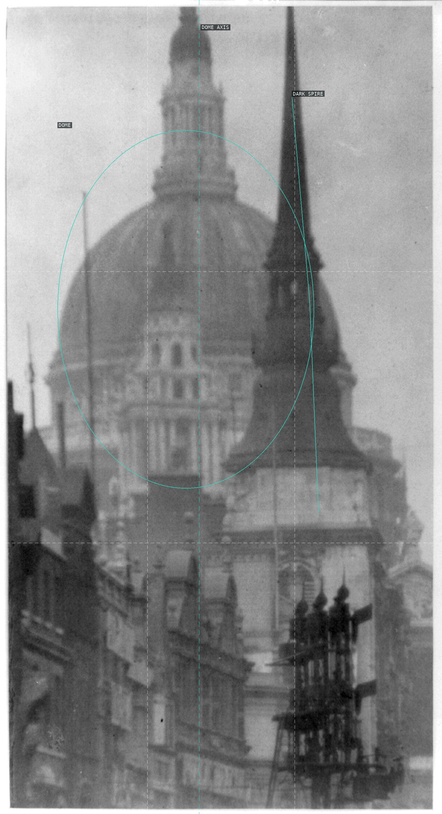
05-st-pauls-cathedral
The pale dome is compressed between a dark spire and low riverside roofs.
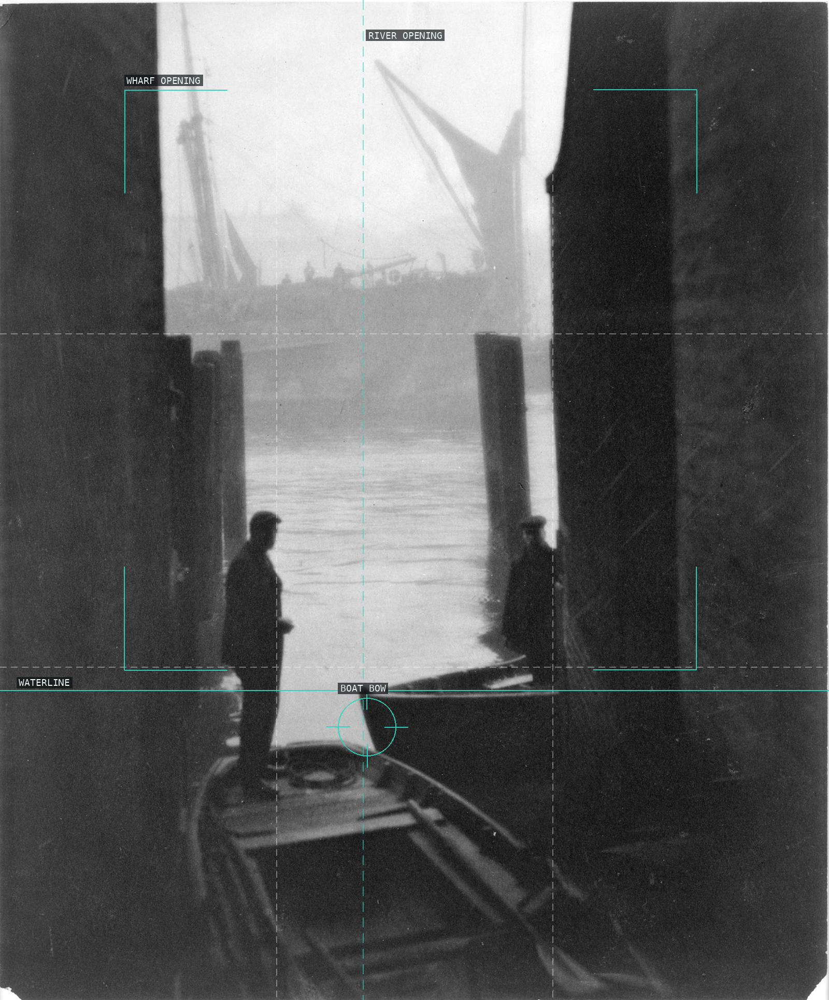
06-the-thames
Dark wharf walls make a narrow opening through which water, boat, and distant cranes appear.
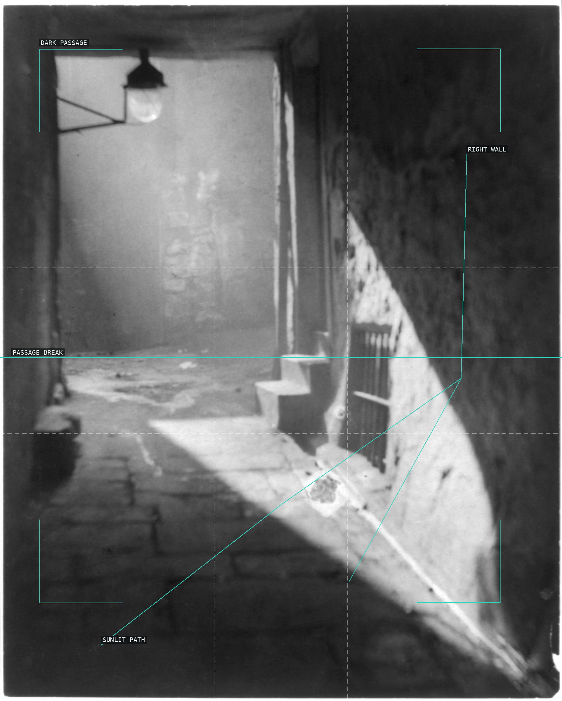
07-weirs-close-edinburgh
A diagonal wedge of light pulls the eye through the narrow alley.
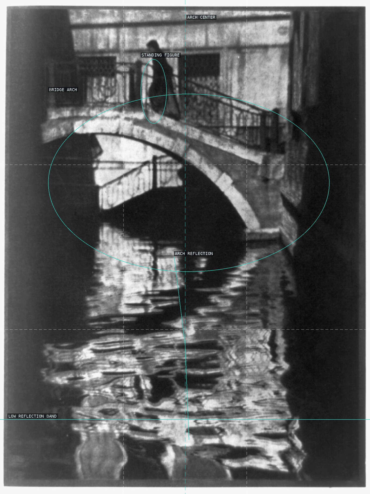
08-the-bridge-venice
The bridge arch and its dark reflection make a paired curve around the standing figure.
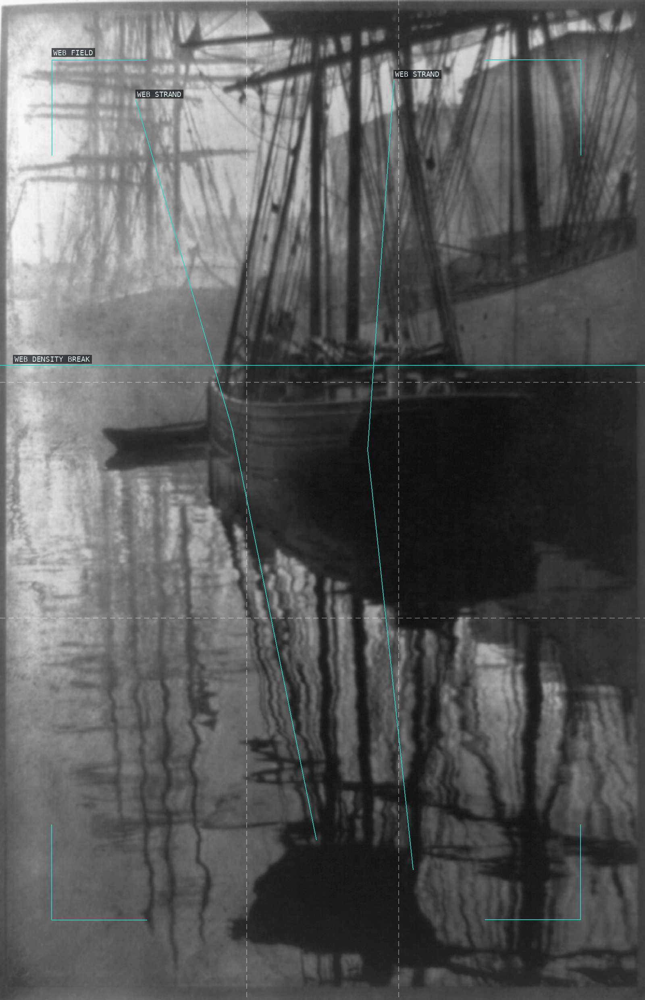
09-spider-webs
Boat rigging and its reflected lines form the loose lattice suggested by the documented title.
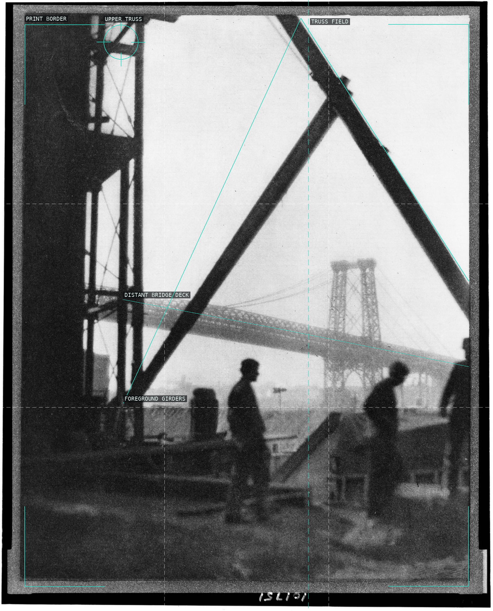
10-williamsburg-bridge
Two foreground girders form a hard triangular aperture around the distant bridge deck and silhouettes.
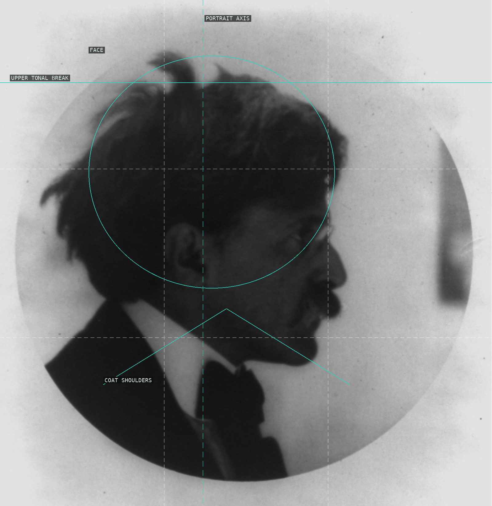
11-alfred-stieglitz
A small illuminated face is held in a broad field of dark coat and ground.
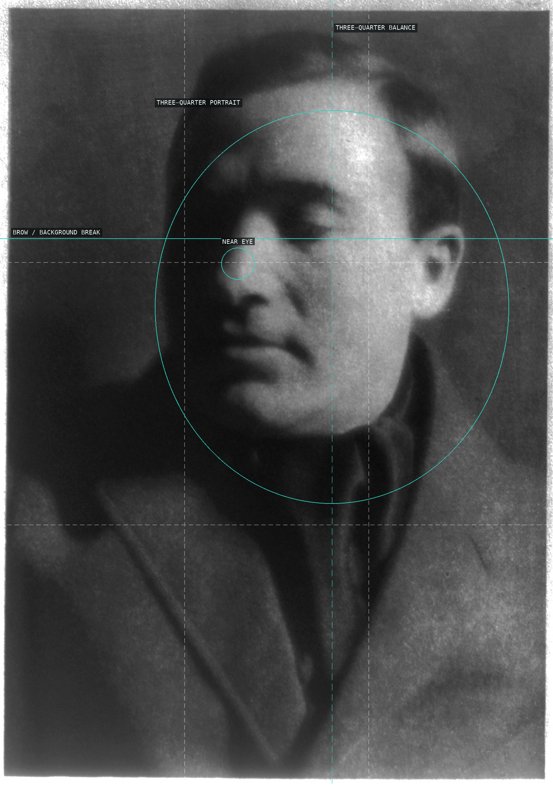
12-max-weber
A three-quarter frontal face occupies a pale oval ground, with the near eye carrying the small point of emphasis.